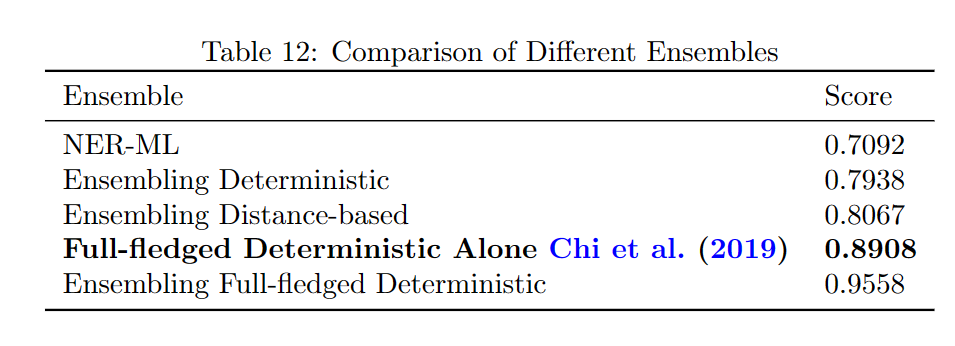
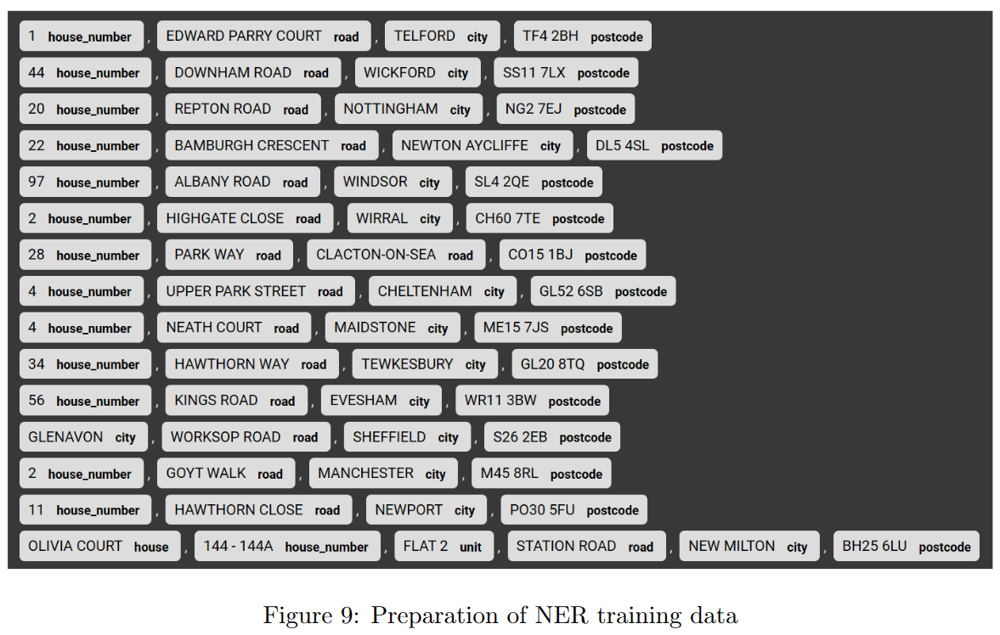
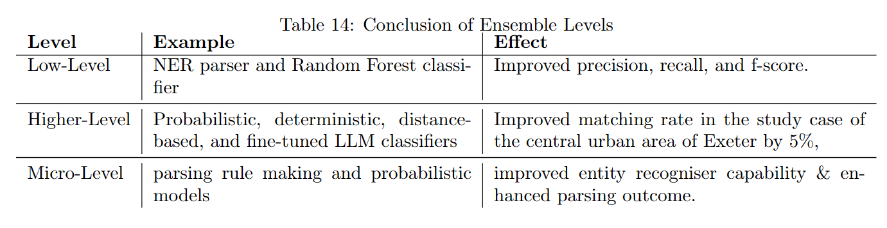

Learning Diary - CASA0023
1 Address Matching and Entity Extraction Across Data Sets



2 Has the expansion of Ultra Low Emission Zone in 2021 improved air quality in London? How to quantify the improvement?
The study found that the expansion of London’s Ultra Low Emission Zone (ULEZ) in October 2021 led to a modest 3-9% reduction in PM10-associated pollutants, confirmed causality via Regression Discontinuity Design (RDD), and noted spatial spillover effects, but suggests further analysis on other pollutants and time scope adjustments.
2.1 Research Questions:
Did the expansion of the Ultra Low Emission Zone (ULEZ) in October 2021 improve air quality in London?
How can this improvement be quantified?
2.2 Key Findings:
2.2.1 Air Quality Improvement:
The expansion of ULEZ on October 25, 2021, led to a noticeable but not significant improvement in air quality. Specifically, there was a 3-9% reduction in PM10-associated pollutants in Greater London.
2.2.2 Sub-Questions:
Categorization of Pollutants: Pollutants were organized into groups based on their collinearity. The categories include:
NOx (NO, NO2, NOXasNO2)
PM10 & Associated (PM10, NV10, V10)
PM2.5_Associated (NV2.5, V2.5, AT2.5, AP2.5)
SO2 (SO2, AP10, CO)
Uncategorised: PM2.5, O3
Causality: The study confirmed a causal relationship between ULEZ expansion and air quality improvement through Regression Discontinuity Design (RDD).
Spatial Patterns: Air quality improved not just within the expanded ULEZ area but also in areas outside it, potentially due to spatial spillover effects.
2.2.3 Areas for Further Research:
Other Pollutants: Further investigation is needed to understand the impact on other pollutants.
Average Performance Metrics: A more comprehensive measure of air quality improvement is yet to be developed.
Time Scope: The timeframe for assessing the effects of ULEZ expansion may need adjustment and could necessitate iterative analysis.
3 Why are KS4 performance in Liverpool and Manchester lower than the national average? Exploration and Quantification of Socio-economic Factors Influencing KS4 Performance in England
The study reveals that while there is no significant difference in overall deprivation between Liverpool & Manchester and the rest of England, students in Liverpool & Manchester are more socio-demographically disadvantaged, and these disadvantages have a greater negative impact on their educational outcomes.
3.1 Main Research Questions:
How does the attainment 8 score relate to deprivation indicators?
Are socio-economic disadvantages more severe in Liverpool & Manchester?
Do socio-economic disadvantages have a greater impact on educational outcomes in Liverpool & Manchester?
3.2 Key Findings:
3.2.1 Relationship between Attainment 8 and Deprivation
After accounting for deprivation-related variables, the model’s explanatory power (Adj. R2) increased from 57.5% to 77.3%.
An additional 1% of students with Special Education Needs (SEN) is associated with a 48.3-point decrease in a borough’s attainment 8 score.
3.2.2 Hypothesis Tests
Severity of Socio-Economic Disadvantages in Liverpool & Manchester: There is no significant difference in the level of deprivation in and outside of Liverpool & Manchester.
Impact of Socio-Economic Disadvantages in Liverpool & Manchester: Socio-demographic disadvantages are more heavily weighted in Liverpool & Manchester, affecting educational outcomes more than they do in the rest of England.
3.2.3 Model Limitations
One variable related to socio-demographics in Liverpool & Manchester had a p-value greater than 0.05, indicating the model may not be a perfect fit.
The study may benefit from the inclusion of other socio-economic factors like disability, or the use of machine learning techniques for better fit.
3.3 Discussion
Students in Liverpool & Manchester are more socio-demographically disadvantaged, and this has a heavier impact on their educational outcomes than for students outside these areas. Interventions such as cultural competency training for educators and safe spaces for marginalized students could improve educational equity and inclusion in Liverpool & Manchester.
By understanding these factors, policymakers can better tailor interventions to support students from disadvantaged backgrounds.